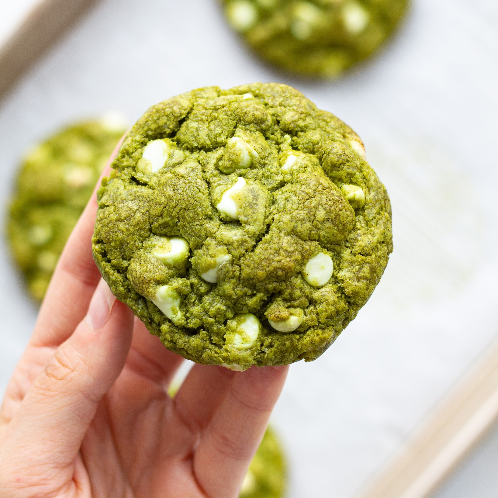

White Chocolate Matcha Cookies
My Favorite Recipe
Ingredients:
- 2 cups (250g) all-purpose flour
- 1 tbsp matcha powder (high-quality for best flavor)
- 1/2 tsp baking soda
- 1/2 tsp salt
- 1/2 cup (113g) unsalted butter, softened
- 3/4 cup (150g) brown sugar
- 1/4 cup (50g) granulated sugar
- 1 large egg
- 1 tsp vanilla extract
- 1 cup (170g) white chocolate chips

Methods:
- Preheat the oven to 175 Degrees Celcius (350 Degree Fahrenheit) and line a baking sheet with parchment paper.
- In a medium bowl, whisk together flour, matcha powder, baking soda, and salt. Set aside.
- In a separate large bowl, beat the butter, brown sugar, and granulated sugar until creamy and smooth.
- Add the egg and vanilla extract, and mix until well combined.
- Gradually add the dry ingredients into the wet ingredients, mixing until just combined. Avoid overmixing.
- Gently fold in the white chocolate chips.
- Scoop the dough into small balls (about 1.5 tablespoons each) and place them on the baking sheet, leaving space between each.
- Bake for 10-12 minutes, or until the edges are slightly golden but the center is still soft.
- Let the cookies cool on the baking sheet for 5 mins, then transfer to a wire rack to cool completely.